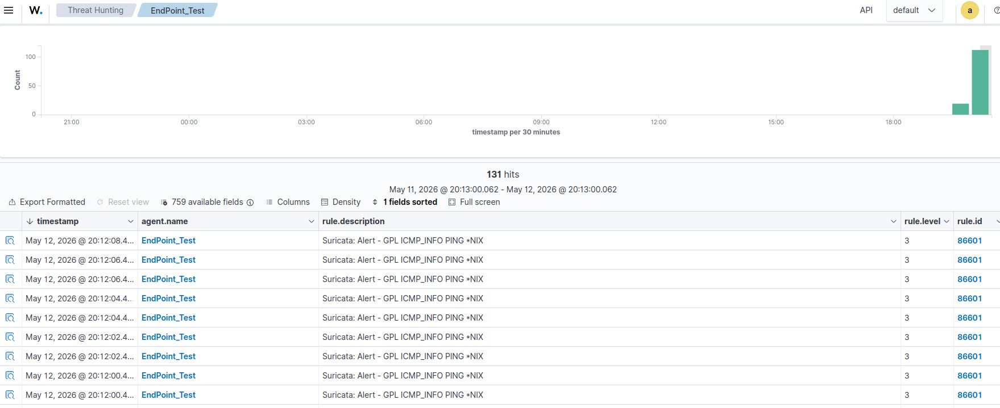
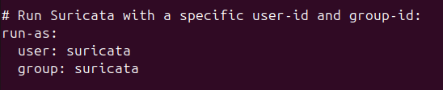
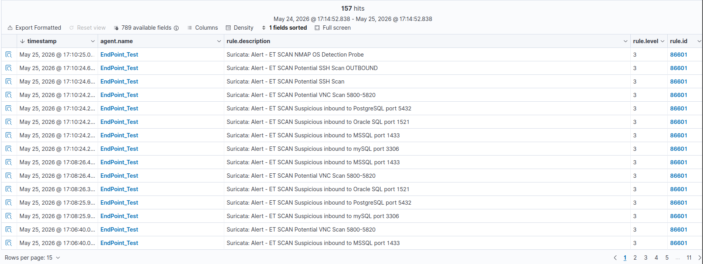
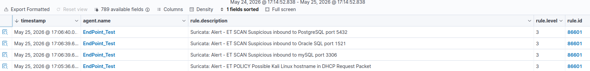
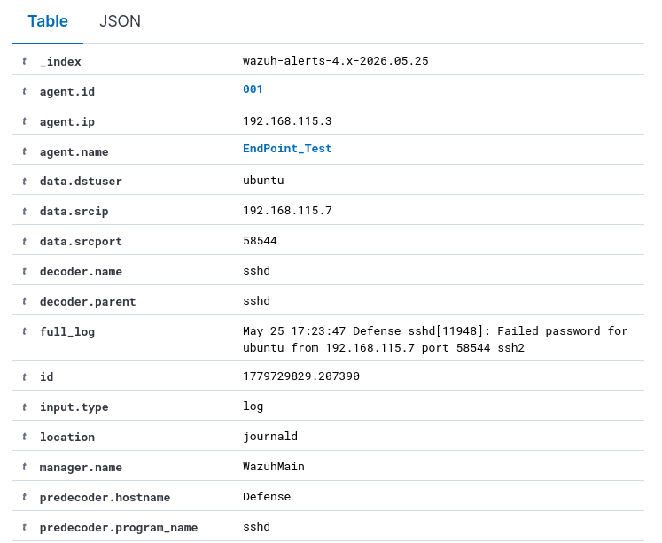
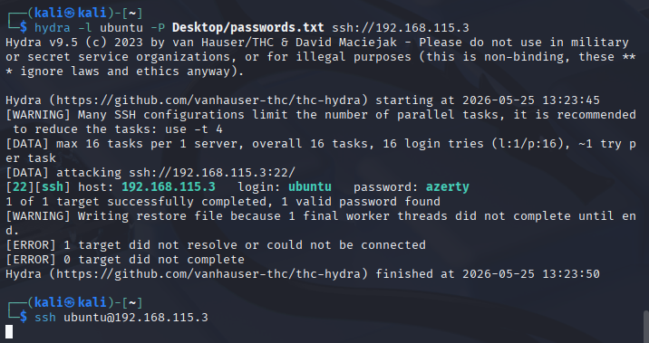
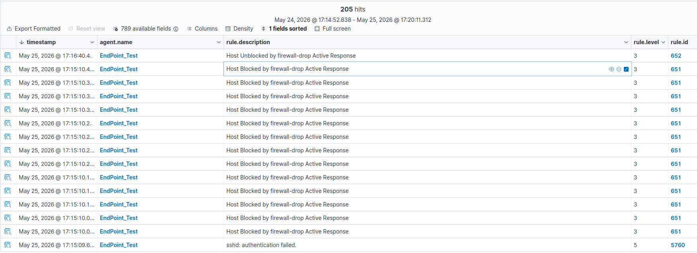
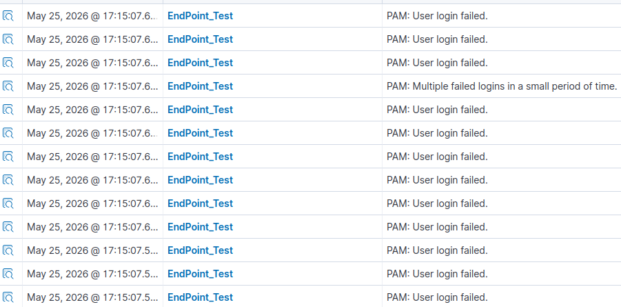
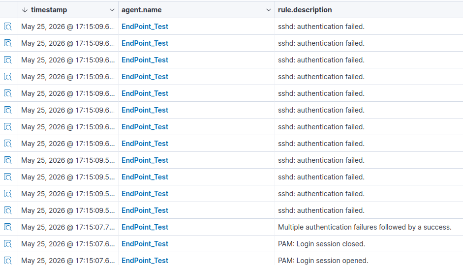
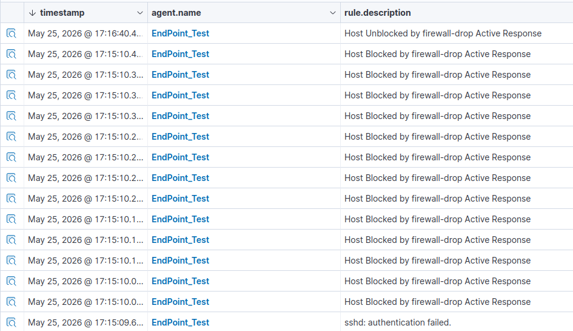

Implémentation de Suricata
Les fonctionnalités de base de monitoring réseau offertes par Wazuh sont satisfaisantes. Il serait cependant intéressant d’ajouter à nos différents postes de travail un IDS/IPS. Il s’agit de sondes réseaux de sécurité permet d’analyser les paquets qui passent par notre réseau. Il existe deux types de sondes : IDS et IPS.
Un IDS (Intrusion Detection System) analyse les paquets et alerte l’administrateur en cas de comportement suspect sans influer ou agir sur le trafic et généralement en amont du pare-feu. Les IDS sont placés en dehors du flux de trafic principal. Ils fonctionnent généralement en mettant en miroir le trafic pour évaluer les menaces, ce qui permet de préserver les performances du réseau en analysant un flux de données dupliqué. Cette configuration permet à l'IDS de rester un observateur non perturbateur. (https://www.paloaltonetworks.fr/cyberpedia/firewall-vs-ids-vs-ips#ids)
Les systèmes IDS se présentent sous différentes formes : système de détection des intrusions par le réseau (NIDS), système de détection des intrusions par l'hôte (HIDS), système basé sur le protocole (PIDS), système basé sur le protocole d'application (APIDS) et système hybride. Il existe également un sous-groupe de méthodes de détection IDS. Les deux variantes les plus courantes sont les IDS basés sur les signatures et les IDS basés sur les anomalies. (https://www.paloaltonetworks.fr/cyberpedia/firewall-vs-ids-vs-ips#ids)
De l’autre côté un IPS (Intrusion Prevention System) effectue la même tâche mais peut cependant agir lorsqu’une activité suspecte est détectée afin de bloquer la menace Contrairement à un IDS, un IPS est placé après une pare-feu et analyse le réseau de façon dynamique. Il examine les données entrantes et prend des mesures automatisées si nécessaire. Les systèmes IPS peuvent signaler des alertes, rejeter les données nuisibles, bloquer les adresses sources et réinitialiser les connexions afin d'empêcher d'autres attaques. Ils sont particulièrement efficace pour bloquer les vulnérabilités réseaux (quelques milisecondes) (https://www.paloaltonetworks.fr/cyberpedia/firewall-vs-ids-vs-ips#ids)
Pour minimiser les faux positifs, les systèmes IPS font la différence entre les menaces authentiques et les données bénignes. Les systèmes de prévention des intrusions y parviennent en utilisant diverses techniques, notamment la détection basée sur les signatures, qui s'appuie sur des modèles connus d'exploits, la détection basée sur les anomalies, qui compare l'activité du réseau à des lignes de base établies, et la détection basée sur les politiques, qui applique des règles de sécurité spécifiques configurées par les administrateurs. Ces méthodes garantissent que seul l'accès autorisé est permis. (https://www.paloaltonetworks.fr/cyberpedia/firewall-vs-ids-vs-ips#ids)
Nous allons utiliser un IDS/IPS opensource dans notre environnement nommé Suricata qui pourra être directement lié à notre EDR afin de centraliser les logs généré par l’IDS/IPS.
Nous avons allons installé Suricata en suivante la proof of concept suivante rédigé par Wazuh : https://documentation.wazuh.com/current/proof-of-concept-guide/integrate-network-ids-suricata.html
Ensuite, nous allons prendre en main l’outil en se basant sur la documentation officielle : https://docs.suricata.io/en/suricata-8.0.4/security.html

Reference : https://documentation.wazuh.com/current/user-manual/capabilities/active-response/ar-use-cases/blocking-ssh-brute-force.html
J’ai également suivi les recommandations de la section 5.Security Configurations de la documentation officielle afin que Suricata tourne sous un utilisateur autre que root après le démarrage. Suricata a cependant besoin des privilèges root au démarrage, mais ces derniers seront délaissés une fois démarré.

Afin de tester les capacités de détection de suricata dans son état actuel, j’ai utilisé l’outil de reconnaissance nmap sur ma machine Kali. Il semblerait que Suricata ait bien détecté cette phase de reconnaissance ainsi que l’usage de cet outil. Une autre information intéressante : Une alerte a été remonté dû à la présence du nom Kali dans les headers d’un paquet. Cela permet de facilement identifier une machine extérieur à son environnement et la déclarer comme malveillante, d’autant plus qu’il s’agit d’une Kali.


Par la suite, j’ai enchainé avec un brute-force Hydra encore une fois pour vérifier si l’active-response fonctionne encore et surtout si Suricata peut détecter quelque chose. Après la fin de la phase de brute-force, des logs intéressants apparaissent sur Wazuh :
-
L’active response fonctionne bien, mais pour rappel, il ne s’agit que d’un time-out. Notre machine d’attaque n’est bloquée que pendant 5 minutes à la suite du brute-force et elle parvient tout de même à trouver le mot de passe. C’est un problème.
-
Wazuh détecte les tentatives de connexion qui ont échoué dans un intervalle de temps très court : PAM: Multiple failed logins in a small period of time.
-
Wazuh détecte qu’une tentative de connexion a réussi à la suite de plusieurs échecs : Multiple authentication failures followed by a success.
-
Wazuh réagit à la tentative de brute-force, en plus de nous fournir l’adresse IP exacte dont provient la tentative : sshd: brute force trying to get access to the system. Authentication failed.

Cependant, aucune trace de logs de la part de suricata. J’ai trouvé la ressource suivante sur internet sur laquelle je vais possiblement m’appuyer pour créer une régle de réponse à ce cas d’usage : https://medium.com/@dinothunderkp/cybersecurity-solution-siem-open-source-wazuh-and-suricata-5ab047b96ca5




